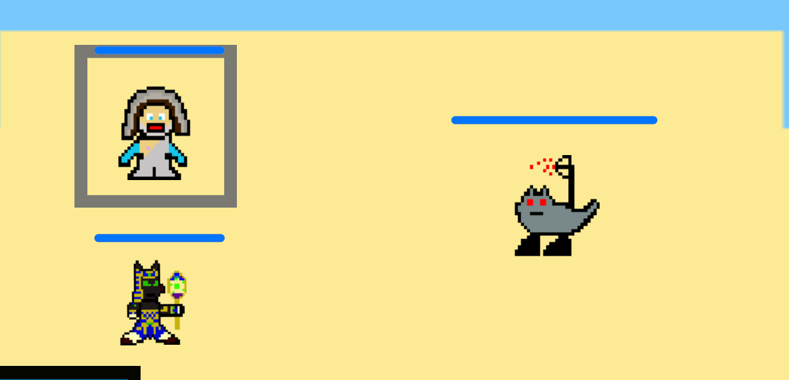
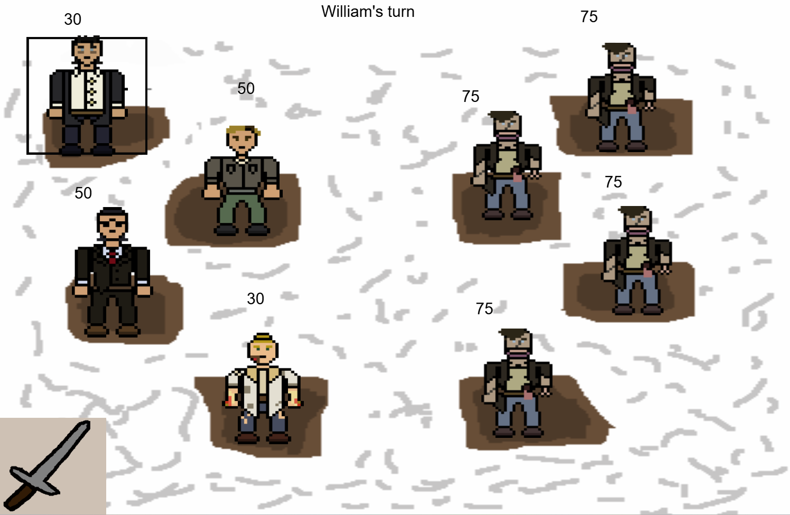

Mythos Mash
Another game I worked on is Mythos Mash a game about Mythology characters fighting mythological creatures and trying to fight Hades: God of the Underworld and his minions, after Hades has created a lifeform like no other to fight different gods. You start off with Zues and Anubis who team up to find other gods to beat Hades. Some charcters I've had ideas for is Sun Wukong, Amaterasu and I've even though about adding historical figures to fight alongside them, including Temujin (Ghengis Khan), Bruce Lee, and Blackbeard.

The Game, Mythos MashEldritch Incident:1948
This game named "Eldritch Incident: 1948" is about the aftermath of WWII and how the raid of Unit 731 went but when they got there they found bodies upon bodies. The main researcher on this project is named Nikolas Kazenkov and he did horrible research on people and space. He one day found a portal and a creature came out and killed everyone there and fled to Russia. Nikolas notifies other country leaders and they send a group of people to go kill the eldritch beings. I was the Lead Game Designer for this project and my team and I did a really good job.

SkillsUSA
I also participated in SkillsUSA which is a United States career and technical student organization serving more than 395,000 high school, college and middle school students and professional members enrolled in training programs in trade, technical and skilled service occupations, including health occupations. I went there with my friend Riley who helped me enter for the Banner Design competition.

For our senior year our instructor wanted everyone in our class to participate in the SkillsUSA Interactive Application and Game Development competition. So I decided I wanted to start ambiitious. I gathered a group of my friends and we started production on a game called Overwrought. Out of my entire class, we were the only ones to start a 3D game and for its quality I thought we did pretty well. This game follows Eric a guy in his 20s going back to his childhood house. Play as Eric as he goes into his memories to get a fresh set of eyes on his past, and relive past events.
.png)